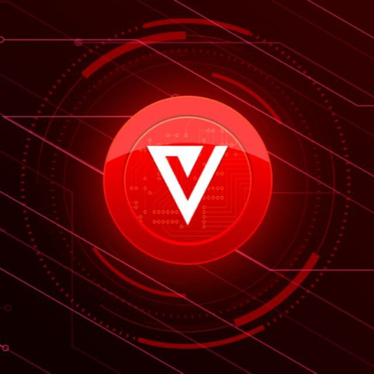
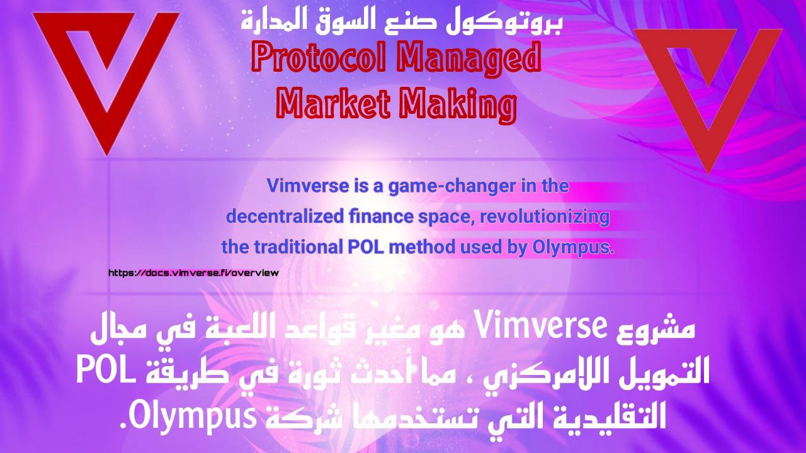

iMe Updates

🎙 مشروع Vimverse عبارة عن منصة مبنية حول بروتوكول احتياطي لامركزي للعملات يشتمل على ميزات DeFi المتقدمة مثل Staking ، والربط ، وإدارة الخزانة وما إلى ذلك ، وهي مبنية على شبكة Sui ومصممة لتحقيق الاستقرار والنمو ، وهي تدعم مجموعة واسعة من المرافق ، بما في ذلك GameFi والمستقبل المحتمل التطبيقات.
🎙 كأول بروتوكول احتياطي لامركزي مبني على Uniswap V3 ، يتبنى Vimverse بشكل مبتكر طريقة تسمى Protocol Managed Market Making (PMMM) لتوفير الأمن والاستقرار للبروتوكول ومستخدميه.
🎙 في Vimverse ، يمكن للمستخدمين مشاركة الرموز المميزة أو الأصول داخل اللعبة لتوليد دخل سلبي ، بينما يوفر الترابط فرصة لشراء الرموز المميزة بخصم، تلعب الخزانة دورًا مهمًا في الحفاظ على استقرار المنصة ، بينما تضمن PMMM سوقًا سيولة للأصول التجارية.
🎙 تمكنه قابلية Vimverse على التكيف من استيعاب العديد من حالات الاستخدام ، مما يضمن قيمتها وأهميتها في المشهد اللامركزي المتطور باستمرار.
سنقدم في مقالنا اليوم شرحاً موجزاً لأهم لأهم نقاط vimverse.
إذا لنراجع بعض المعلومات قليلا حول الخزنة في Vimverse و كيف تعمل
💡 تعمل الخزنة كعنصر حيوي ضمن بروتوكول Vimverse ، حيث تمثل جميع الأصول التي يمتلكها ويديرها البروتوكول.
💡 و تتمثل مسؤوليتها الأساسية في ضمان سيولة VIM في الأسواق المفتوحة واستقرار رمز VIM من خلال عمليات السوق المباشرة في ظل ظروف محددة.
💡ان كل رمز VIM مدعوم بـ 1 USDC في الخزنة. و عندما يتم تداول VIM بأقل من 1 USDC ، يبدأ البروتوكول في إعادة الشراء ويحرق رموز VIM ؛ 🔥 على العكس من ذلك ، عندما يتم تداول VIM أعلى من 1 USDC ، يقوم البروتوكول بصنع وبيع رموز VIM الجديدة. 🔥 وهذا يضمن ، على المدى الطويل ، أن VIM لن تتداول بأقل من قيمتها الجوهرية.💎
- 🔎 نظرًا لأن الخزانة يجب أن تحتفظ بما لا يقل عن 1 USDC لكل رمز VIM ، فإنها تحقق ربحًا في كل مرة تشتري أو تبيع ، والتي يتم توزيعها بعد ذلك بين المجتمع. 💰
🔎 و على عكس TVL (إجمالي القيمة المحجوزة) في البروتوكولات الأخرى ، والتي يمكن سحبها بسهولة ، ستستمر قيمة Vimverse Treasury في النمو جنبًا إلى جنب مع توسع المجتمع (باستثناء أثناء عمليات إعادة الشراء).
ما هو PMMM ((بروتوكول صنع السوق المدارة)) في Vimverse؟
💱 يعتبر Vimverse مغير قواعد اللعبة في مجال التمويل اللامركزي ، مما أحدث ثورة في طريقة POL التقليدية التي تستخدمها شركة Olympus. 💱
🎙 وهي تعتمد بروتوكول صنع السوق المُدار (PMMM) المبتكر كأول بروتوكول احتياطي لامركزي للعملات مبني على منصة Uniswap V3 الرائدة. 💸
🔝 يقدم Uniswap V3 سيولة مركزة ، مما يسمح لمزودي السيولة بتخصيص رأس المال بشكل أكثر كفاءة من خلال تحديد نطاقات أسعار مخصصة.
🎙 و يمكّن هذا الابتكار Vimverse من تحديد نطاقات سيولة مخصصة بشكل فعال ، وتحسين الاستفادة من رأس المال وتوفير الأمن والاستقرار للبروتوكول ومستخدميه.
🔎 عندما يدخل جزء من USDC أو Sui الخزانة ، فإنه يقوم تلقائيًا بتكوين زوج تداول برمز VIM المميز في DAO ، مما يضيف السيولة مباشرةً.
🔝 و يعمل Uniswap V3 على تعزيز استقرار البروتوكول من خلال تقديم أوراكل محسّن للسعر وميزات مقايضة متقدمة مثل تداولات القفزات المتعددة لاكتشاف أفضل للسعر.
🔎 و من خلال الاستفادة من المزايا والابتكارات الفريدة لـ Uniswap V3 ، يعمل Vimverse بشكل كبير على تحسين استقرار البروتوكول ، وتحسين إدارة السيولة ، ويوفر تجربة مستخدم فائقة للمتداولين في نظام DeFi البيئي.
تابعوا التويتر الرسمي المجتمع العالمي للمشروع لمتابعة اهم التحديثات و الاخبار
ويمكنكم الانضمام للمجتمع العربي للمشروع للمجتمع العربي للمشروع